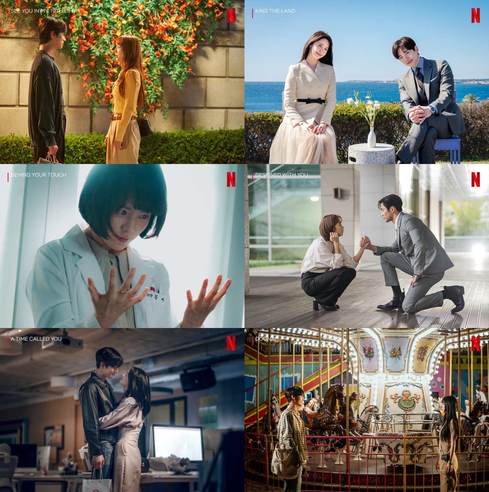

Las mejores series románticas coreanas de los últimos años
1. Propuesta laboral.
2. king the Land.
3. Mi adorable demonio
4. Un amor predestinado
5. Aterrizaje de emergencia.
6. Belleza verdadera
7. El amor es como un chachacha.
8. El amor es un capítulo aparte.